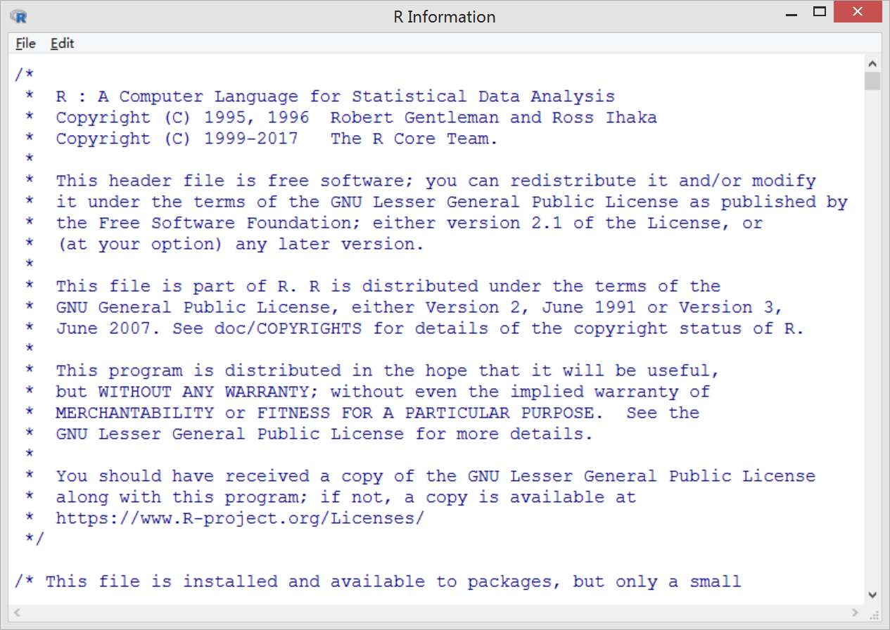

第 3 章 文件管理员
考虑添加 Shell 下的命令实现，参考 命令行的艺术
library(magrittr) # 提供管道命令 %>%# 加载 R 包
library(fs)3.1 查看文件
文件夹只包含文件，目录既包含文件又包含文件夹，list.dirs 列出目录或文件夹，list.files 列出文件或文件夹
list.dirs(path = ".", full.names = TRUE, recursive = TRUE)- path: 指定完整路径名，默认使用当前路径
getwd() - full.names: TRUE 返回相对路径，FALSE 返回目录的名称
- recursive: 是否递归的方式列出目录，如果是的话，目录下的子目录也会列出
# list.dirs(path = '.', full.names = TRUE, recursive = TRUE) list.dirs(path = '.', full.names = TRUE, recursive = FALSE) #> [1] "./.git" #> [2] "./.Rproj.user" #> [3] "./_book" #> [4] "./_bookdown_files" #> [5] "./01-preface_cache" #> [6] "./02-introduction_cache" #> [7] "./04-file-system_cache" #> [8] "./06-data-import-export_cache" #> [9] "./08-data-manipulation_cache" #> [10] "./08-data-manipulation_files" #> [11] "./09-vector-manipulation_cache" #> [12] "./10-data-cleaning-with-string_cache" #> [13] "./11-data-cleaning-with-stringr_cache" #> [14] "./12-data-cleaning-with-regexp_cache" #> [15] "./13-data-visualization-with-plot_cache" #> [16] "./13-data-visualization-with-plot_files" #> [17] "./14-data-visualization-with-plot3d_cache" #> [18] "./14-data-visualization-with-plot3d_files" #> [19] "./15-data-visualization-with-ggplot2_cache" #> [20] "./15-data-visualization-with-ggplot2_files" #> [21] "./16-data-visualization-with-colors-fonts_cache" #> [22] "./16-data-visualization-with-colors-fonts_files" #> [23] "./17-interactive-graphics_cache" #> [24] "./17-interactive-graphics_files" #> [25] "./18-dynamic-documents_cache" #> [26] "./18-dynamic-documents_files" #> [27] "./19-data-cleaning-with-python_cache" #> [28] "./code" #> [29] "./css" #> [30] "./data" #> [31] "./figures" #> [32] "./images" #> [33] "./index_cache" #> [34] "./index_files" #> [35] "./latex" #> [36] "./rsconnect" list.dirs(path = '.', full.names = FALSE, recursive = FALSE) #> [1] ".git" #> [2] ".Rproj.user" #> [3] "_book" #> [4] "_bookdown_files" #> [5] "01-preface_cache" #> [6] "02-introduction_cache" #> [7] "04-file-system_cache" #> [8] "06-data-import-export_cache" #> [9] "08-data-manipulation_cache" #> [10] "08-data-manipulation_files" #> [11] "09-vector-manipulation_cache" #> [12] "10-data-cleaning-with-string_cache" #> [13] "11-data-cleaning-with-stringr_cache" #> [14] "12-data-cleaning-with-regexp_cache" #> [15] "13-data-visualization-with-plot_cache" #> [16] "13-data-visualization-with-plot_files" #> [17] "14-data-visualization-with-plot3d_cache" #> [18] "14-data-visualization-with-plot3d_files" #> [19] "15-data-visualization-with-ggplot2_cache" #> [20] "15-data-visualization-with-ggplot2_files" #> [21] "16-data-visualization-with-colors-fonts_cache" #> [22] "16-data-visualization-with-colors-fonts_files" #> [23] "17-interactive-graphics_cache" #> [24] "17-interactive-graphics_files" #> [25] "18-dynamic-documents_cache" #> [26] "18-dynamic-documents_files" #> [27] "19-data-cleaning-with-python_cache" #> [28] "code" #> [29] "css" #> [30] "data" #> [31] "figures" #> [32] "images" #> [33] "index_cache" #> [34] "index_files" #> [35] "latex" #> [36] "rsconnect"- path: 指定完整路径名，默认使用当前路径
list.files(path = ".", pattern = NULL, all.files = FALSE, full.names = FALSE, recursive = FALSE,ignore.case = FALSE, include.dirs = FALSE, no.. = FALSE)是否递归的方式列出目录，如果是的话，目录下的子目录也会列出
- path: 指定完整路径名，默认使用当前路径
getwd() - full.names: TRUE 返回相对路径，FALSE 返回目录的名称
- recursive: 是否递归的方式列出目录，如果是的话，目录下的子目录也会列出
- path: 指定完整路径名，默认使用当前路径
file.show(..., header = rep("", nfiles), title = "R Information", delete.file = FALSE, pager = getOption("pager"),encoding = "")打开文件内容，
file.show会在R终端中新开一个窗口显示文件，如图3.1所示rinternals <- file.path(R.home("include"), "Rinternals.h") # file.show(rinternals)knitr::include_graphics(path = 'figures/show-file.png')图 3.1: file.show 打开文件
file.info(..., extra_cols = TRUE)获取文件信息，此外
file.mode(...)、file.mtime(...)和file.size(...)分别表示文件的读写权限，修改时间和文件大小。file.info(rinternals) #> size isdir mode #> C:/PROGRA~1/R/R-36~1.0/include/Rinternals.h 57273 FALSE 666 #> mtime #> C:/PROGRA~1/R/R-36~1.0/include/Rinternals.h 2019-04-11 23:02:02 #> ctime #> C:/PROGRA~1/R/R-36~1.0/include/Rinternals.h 2019-05-14 18:19:50 #> atime exe #> C:/PROGRA~1/R/R-36~1.0/include/Rinternals.h 2019-05-14 18:19:50 no file.mode(rinternals) #> [1] "666" file.mtime(rinternals) #> [1] "2019-04-11 23:02:02 CST" file.size(rinternals) #> [1] 57273 # 查看当前目录的权限 file.info(".") #> size isdir mode mtime ctime atime #> . 0 TRUE 777 2019-05-27 00:47:32 2019-01-18 17:00:19 2019-05-27 00:47:32 #> exe #> . no # 查看指定目录权限 file.info("./_book/") #> size isdir mode mtime ctime #> ./_book/ 0 TRUE 777 2019-05-27 00:47:33 2019-05-27 00:00:36 #> atime exe #> ./_book/ 2019-05-27 00:47:33 nofile.access(names, mode = 0)文件是否可以被访问，第二个参数 mode 一共有四种取值 0，1，2，4，分别表示文件的存在性，可执行，可写和可读四种，返回值 0 表示成功，返回值 -1 表示失败。
file.access(rinternals,mode = 0) #> C:/PROGRA~1/R/R-36~1.0/include/Rinternals.h #> 0 file.access(rinternals,mode = 1) #> C:/PROGRA~1/R/R-36~1.0/include/Rinternals.h #> -1 file.access(rinternals,mode = 2) #> C:/PROGRA~1/R/R-36~1.0/include/Rinternals.h #> -1 file.access(rinternals,mode = 4) #> C:/PROGRA~1/R/R-36~1.0/include/Rinternals.h #> 0dir(path = ".", pattern = NULL, all.files = FALSE, full.names = FALSE, recursive = FALSE, ignore.case = FALSE, include.dirs = FALSE, no.. = FALSE)查看目录，首先看看和目录操作有关的函数列表
apropos("^dir.") #> [1] "dir.create" "dir.exists" "dir_copy" "dir_create" "dir_delete" #> [6] "dir_exists" "dir_info" "dir_ls" "dir_map" "dir_tree" #> [11] "dir_walk" "dirname"显而易见，
dir.create和dir.exists分别是创建目录和查看目录的存在性。dirname和basename是一对函数用来操作文件路径。以当前目录C:/Users/xy-huang/Desktop/RGraphics为例，dirname(getwd())返回 C:/Users/xy-huang/Desktop 而basename(getwd())返回 RGraphics。对于文件路径而言，dirname(rinternals)返回文件所在的目录C:/PROGRA1/R/R-361.0/include，basename(rinternals)返回文件名Rinternals.h。dir函数查看指定路径或目录下的文件，支持以模式匹配和递归的方式查找目录下的文件# 当前目录下的子目录和文件 dir() #> [1] "_book" #> [2] "_bookdown.yml" #> [3] "_bookdown_files" #> [4] "_common.R" #> [5] "_deploy.sh" #> [6] "_output.yml" .... # 查看指定目录的子目录和文件 dir(path = "./") #> [1] "_book" #> [2] "_bookdown.yml" #> [3] "_bookdown_files" #> [4] "_common.R" #> [5] "_deploy.sh" #> [6] "_output.yml" .... # 只列出以字母R开头的子目录和文件 dir(path = "./", pattern = "^R") #> [1] "README.md" "RGraphics.rds" "RGraphics.Rproj" # 列出目录下所有目录和文件，包括隐藏文件 dir(path = "./", all.files = TRUE) #> [1] "." #> [2] ".." #> [3] ".git" #> [4] ".gitignore" #> [5] ".Rhistory" #> [6] ".Rproj.user" .... # 支持正则表达式 dir(pattern = '^[A-Z]+[.]txt$', full.names=TRUE, system.file('doc', 'SuiteSparse', package='Matrix')) #> [1] "D:/library/Matrix/doc/SuiteSparse/AMD.txt" #> [2] "D:/library/Matrix/doc/SuiteSparse/CHOLMOD.txt" #> [3] "D:/library/Matrix/doc/SuiteSparse/COLAMD.txt" #> [4] "D:/library/Matrix/doc/SuiteSparse/SPQR.txt"# 在临时目录下递归创建一个目录 dir.create(paste0(tempdir(), "/_book/tmp"), recursive = TRUE)
查看当前目录下的文件和文件夹 tree -L 2 . 或者 ls -l .
3.2 操作文件
实现文件增删改查的函数如下
apropos("^file.")
#> [1] "file.access" "file.append" "file.choose" "file.copy"
#> [5] "file.create" "file.edit" "file.exists" "file.info"
#> [9] "file.link" "file.mode" "file.mtime" "file.path"
#> [13] "file.remove" "file.rename" "file.show" "file.size"
#> [17] "file.symlink" "file_access" "file_chmod" "file_chown"
#> [21] "file_copy" "file_create" "file_delete" "file_exists"
#> [25] "file_info" "file_move" "file_show" "file_size"
#> [29] "file_temp" "file_temp_pop" "file_temp_push" "file_test"
#> [33] "file_touch" "fileSnapshot"file.create(..., showWarnings = TRUE)创建/删除文件，检查文件的存在性
file.create('demo.txt') #> [1] TRUE file.exists('demo.txt') #> [1] TRUE file.remove('demo.txt') #> [1] TRUE file.exists('demo.txt') #> [1] FALSEfile.rename(from, to)文件重命名file.create('demo.txt') #> [1] TRUE file.rename(from = 'demo.txt', to = 'tmp.txt') #> [1] TRUE file.exists('tmp.txt') #> [1] TRUEfile.append(file1, file2)追加文件file2的内容到文件file1上if(!dir.exists(paths = 'data/')) dir.create(path = 'data/') # 创建两个临时文件 # file.create(c('data/tmp1.md','data/tmp2.md')) # 写入内容 cat("AAA\n", file = 'data/tmp1.md') cat("BBB\n", file = 'data/tmp2.md') # 追加文件 file.append(file1 = 'data/tmp1.md', file2 = 'data/tmp2.md') #> [1] TRUE # 展示文件内容 readLines('data/tmp1.md') #> [1] "AAA" "BBB"file.copy(from, to, overwrite = recursive, recursive = FALSE,copy.mode = TRUE, copy.date = FALSE)复制文件，参考 https://blog.csdn.net/wzj_110/article/details/86497860file.copy(from = 'Makefile', to = 'data/Makefile') #> [1] FALSEfile.symlink(from, to)创建符号链接file.link(from, to)创建硬链接Sys.junction(from, to)windows 平台上的函数，提供类似符号链接的功能Sys.readlink(paths)读取文件的符号链接（软链接）choose.files在 Windows 环境下交互式地选择一个或多个文件，所以该函数只运行于 Windows 环境# 选择 zip 格式的压缩文件或其它 if (interactive()) choose.files(filters = Filters[c("zip", "All"),])Filters参数传递一个矩阵，用来描述或标记R识别的文件类型，上面这个例子就能筛选出 zip 格式的文件download.file文件下载download.file(url = 'https://mirrors.tuna.tsinghua.edu.cn/CRAN/src/base/R-latest.tar.gz', destfile = 'data/R-latest.tar.gz', method = 'auto')
3.3 压缩文件
tar 和 zip 是两种常见的压缩文件工具，具有免费和跨平台的特点，因此应用范围广3。 R 内对应的压缩与解压缩命令是 tar/untar
tar(tarfile, files = NULL,
compression = c("none", "gzip", "bzip2", "xz"),
compression_level = 6, tar = Sys.getenv("tar"),
extra_flags = "")比较常用的压缩文件格式是 .tar.gz 和 .tar.bz2，将目录 _book/及其文件分别压缩成 _book.tar.gz 和 _book.tar.bz2 压缩包的名字可以任意取，后者压缩比率高。.tar.xz 的压缩比率最高，需要确保系统中安装了 gzip，bzip2 和 xz-utils 软件，R 软件自带的 tar 软件来自 Rtools4，我们可以通过设置系统环境变量 Sys.setenv(tar="path/to/tar") 指定外部 tar。tar 实际支持的压缩类型只有 .tar.gz5。zip/unzip 压缩与解压缩就不赘述了。
# 打包目录 _book
tar(tarfile = 'data/_book.tar', files = '_book', compression = 'none')
# 文件压缩成 _book.xz 格式
tar(tarfile = 'data/_book.tar.xz', files = 'data/_book', compression = 'xz')
# tar -cf data/_book.tar _book 然后 xz -z data/_book.tar.xz data/_book.tar
# 或者一次压缩到位 tar -Jcf data/_book.tar.xz _book/
# 解压 xz -d data/_book.tar.xz 再次解压 tar -xf data/_book.tar
# 或者一次解压 tar -Jxf data/_book.tar.xz
# 文件压缩成 _book.tar.gz 格式
# tar -czf data/_book.tar.gz _book
tar(tarfile = 'data/_book.tar.gz', files = '_book', compression = 'gzip')
# 解压 tar -xzf data/_book.tar.gz
# 文件压缩成 .tar.bz2 格式
# tar -cjf data/book2.tar.bz2 _book
tar(tarfile = 'data/_book.tar.bz2', files = '_book', compression = 'bzip2')
# 解压 tar -xjf data/book2.tar.bz2untar(tarfile, files = NULL, list = FALSE, exdir = ".",
compressed = NA, extras = NULL, verbose = FALSE,
restore_times = TRUE, tar = Sys.getenv("TAR"))3.4 路径操作
环境变量算是路径操作
# 获取环境变量
Sys.getenv("PATH")
#> [1] "C:\\Program Files\\R\\R-3.6.0\\bin\\x64;C:\\Rtools\\bin;C:\\Rtools\\mingw_64\\bin;C:\\Rtools\\mingw_32\\bin;C:\\Program Files\\Microsoft MPI\\Bin\\;C:\\Program Files (x86)\\Common Files\\Oracle\\Java\\javapath;C:\\Program Files\\NVIDIA GPU Computing Toolkit\\CUDA\\v9.2\\bin;C:\\Program Files\\NVIDIA GPU Computing Toolkit\\CUDA\\v9.2\\libnvvp;C:\\Windows\\system32;C:\\Windows;C:\\Windows\\System32\\Wbem;C:\\Windows\\System32\\WindowsPowerShell\\v1.0\\;C:\\Program Files\\Intel\\WiFi\\bin\\;C:\\Program Files\\Common Files\\Intel\\WirelessCommon\\;C:\\Program Files (x86)\\NVIDIA Corporation\\PhysX\\Common;D:\\Program Files\\qpdf-8.0.2\\bin;C:\\Program Files\\gs\\gs9.26\\bin;C:\\Users\\xy-huang\\AppData\\Local\\Programs\\orca;C:\\Program Files (x86)\\LyX 2.3\\Perl\\bin;D:\\Program Files (x86)\\optipng-0.7.7-win32;C:\\Program Files\\Inkscape;C:\\ProgramData\\chocolatey\\bin;C:\\Program Files\\Git\\cmd;C:\\Program Files\\nodejs;C:\\Program Files\\PuTTY;C:\\Program Files\\Pandoc;C:\\Program Files\\Pandoc\\;D:\\Program Files (x86)\\bin;C:\\Program Files\\Intel\\WiFi\\bin\\;C:\\Program Files\\Common Files\\Intel\\WirelessCommon\\;C:\\Program Files\\Docker Toolbox;C:\\Users\\xy-huang\\AppData\\Local\\atom\\bin;D:\\TinyTeX\\bin\\win32;C:\\Program Files\\JetBrains\\PyCharm 2018.3.4\\bin;;C:\\Users\\xy-huang\\AppData\\Roaming\\npm"
# 设置环境变量 Windows
# Sys.setenv(R_GSCMD = "C:/Program Files/gs/gs9.26/bin/gswin64c.exe")
# 设置 pandoc 环境变量
pandoc_path <- Sys.getenv("RSTUDIO_PANDOC", NA)
if (Sys.which("pandoc") == "" && !is.na(pandoc_path)) {
Sys.setenv(PATH = paste(
Sys.getenv("PATH"), pandoc_path,
sep = if (.Platform$OS.type == "unix") ":" else ";"
))
}操作文件路径
file.pathConstruct Path to Filefile.path('./_book') #> [1] "./_book"path.expand(path)Expand File Pathspath.expand('./_book') #> [1] "./_book" path.expand('~') #> [1] "C:/Users/xy-huang/Documents"normalizePath()Express File Paths in Canonical FormnormalizePath('~') #> [1] "C:\\Users\\xy-huang\\Documents" normalizePath('./_book') #> [1] "C:\\Users\\xy-huang\\Desktop\\RGraphics\\_book"shortPathName(path)只在 Windows 下可用，Express File Paths in Short Formcat(shortPathName(c(R.home(), tempdir())), sep = "\n") #> C:\PROGRA~1\R\R-36~1.0 #> C:\Users\xy-huang\AppData\Local\Temp\RTMPQ8~1Sys.globWildcard Expansion on File PathsSys.glob(file.path(R.home(), "library", "*", "R", "*.rdx")) #> [1] "C:/PROGRA~1/R/R-36~1.0/library/KernSmooth/R/KernSmooth.rdx" #> [2] "C:/PROGRA~1/R/R-36~1.0/library/MASS/R/MASS.rdx" #> [3] "C:/PROGRA~1/R/R-36~1.0/library/Matrix/R/Matrix.rdx" #> [4] "C:/PROGRA~1/R/R-36~1.0/library/base/R/base.rdx" #> [5] "C:/PROGRA~1/R/R-36~1.0/library/boot/R/boot.rdx" #> [6] "C:/PROGRA~1/R/R-36~1.0/library/class/R/class.rdx" ....
3.5 查找文件
here 包用来查找你的文件，查找文件、可执行文件的完整路径、R 包
Sys.whichFind Full Paths to ExecutablesSys.which('pandoc') #> pandoc #> "C:\\PROGRA~3\\CHOCOL~1\\bin\\pandoc.exe"system.fileFind Names of R System Filessystem.file('CITATION',package = 'base') #> [1] "C:/PROGRA~1/R/R-36~1.0/library/base/CITATION"R.home# R 安装目录 R.home() #> [1] "C:/PROGRA~1/R/R-36~1.0" # R执行文件目录 R.home('bin') #> [1] "C:/PROGRA~1/R/R-36~1.0/bin/x64" # 配置文件目录 R.home('etc') #> [1] "C:/PROGRA~1/R/R-36~1.0/etc" # R 基础扩展包存放目录 R.home('library') #> [1] "C:/PROGRA~1/R/R-36~1.0/library".libPaths()R 包存放的路径有哪些.libPaths() #> [1] "D:/library" "C:/Program Files/R/R-3.6.0/library"find.package查找R包所在目录find.package(package = 'MASS') #> [1] "D:/library/MASS"file.exist检查文件是否存在file.exists(paste(R.home('etc'),"Rprofile.site",sep = .Platform$file.sep)) #> [1] TRUEapropos和find查找对象
apropos(what, where = FALSE, ignore.case = TRUE, mode = "any")
find(what, mode = "any", numeric = FALSE, simple.words = TRUE)匹配含有 find 的函数
apropos("find")
#> [1] ".find.package" "find"
#> [3] "Find" "find.package"
#> [5] "find_external_resources" "findClass"
#> [7] "findFunction" "findInterval"
#> [9] "findLineNum" "findMethod"
#> [11] "findMethods" "findMethodSignatures"
#> [13] "findPackageEnv" "findRestart"
#> [15] "findUnique"问号 ? 加函数名搜索R软件内置函数的帮助文档，如 ?regrex。如果不知道具体的函数名，可采用关键词搜索，如
help.search(keyword = "character", package = "base")browseEnv 函数用来在浏览器中查看当前环境下，对象的列表，默认环境是 sys.frame()
3.6 文件权限
操作目录和文件的权限 Manipulation of Directories and File Permissions
dir.exists(paths)检查目录是否存在dir.exists(c('./_book','./book')) #> [1] TRUE FALSEdir.create(path, showWarnings = TRUE, recursive = FALSE, mode = "0777")创建目录dir.create('./_book/tmp')Sys.chmod(paths, mode = "0777", use_umask = TRUE)修改权限Sys.chmod('./_book/tmp')Sys.umask(mode = NA)
3.7 区域设置
Sys.getlocale(category = "LC_ALL")查看当前区域设置Sys.getlocale(category = "LC_ALL") #> [1] "LC_COLLATE=Chinese (Simplified)_China.936;LC_CTYPE=Chinese (Simplified)_China.936;LC_MONETARY=Chinese (Simplified)_China.936;LC_NUMERIC=C;LC_TIME=Chinese (Simplified)_China.936"Sys.setlocale(category = "LC_ALL", locale = "")设置区域# 默认设置 Sys.setlocale(category = "LC_ALL", locale = "") #> [1] "LC_COLLATE=Chinese (Simplified)_China.936;LC_CTYPE=Chinese (Simplified)_China.936;LC_MONETARY=Chinese (Simplified)_China.936;LC_NUMERIC=C;LC_TIME=Chinese (Simplified)_China.936" # 保存当前区域设置 old <- Sys.getlocale() Sys.setlocale("LC_MONETARY", locale = "") #> [1] "Chinese (Simplified)_China.936" Sys.localeconv() #> decimal_point thousands_sep grouping int_curr_symbol #> "." "" "" "CNY" #> currency_symbol mon_decimal_point mon_thousands_sep mon_grouping #> "￥" "." "," "\003" #> positive_sign negative_sign int_frac_digits frac_digits #> "" "-" "2" "2" #> p_cs_precedes p_sep_by_space n_cs_precedes n_sep_by_space #> "1" "0" "1" "0" #> p_sign_posn n_sign_posn #> "4" "4" Sys.setlocale("LC_MONETARY", "de_AT") #> Warning in Sys.setlocale("LC_MONETARY", "de_AT"): OS reports request to set #> locale to "de_AT" cannot be honored #> [1] "" Sys.localeconv() #> decimal_point thousands_sep grouping int_curr_symbol #> "." "" "" "CNY" #> currency_symbol mon_decimal_point mon_thousands_sep mon_grouping #> "￥" "." "," "\003" #> positive_sign negative_sign int_frac_digits frac_digits #> "" "-" "2" "2" #> p_cs_precedes p_sep_by_space n_cs_precedes n_sep_by_space #> "1" "0" "1" "0" #> p_sign_posn n_sign_posn #> "4" "4" # 恢复区域设置 Sys.setlocale(locale = old) #> Warning in Sys.setlocale(locale = old): OS reports request to set locale to #> "LC_COLLATE=Chinese (Simplified)_China.936;LC_CTYPE=Chinese (Simplified)_China. #> 936;LC_MONETARY=Chinese (Simplified)_China.936;LC_NUMERIC=C;LC_TIME=Chinese #> (Simplified)_China.936" cannot be honored #> [1] ""Sys.localeconv()当前区域设置下，数字和货币的表示Sys.localeconv() #> decimal_point thousands_sep grouping int_curr_symbol #> "." "" "" "CNY" #> currency_symbol mon_decimal_point mon_thousands_sep mon_grouping #> "￥" "." "," "\003" #> positive_sign negative_sign int_frac_digits frac_digits #> "" "-" "2" "2" #> p_cs_precedes p_sep_by_space n_cs_precedes n_sep_by_space #> "1" "0" "1" "0" #> p_sign_posn n_sign_posn #> "4" "4"本地化信息
l10n_info() #> $MBCS #> [1] TRUE #> #> $`UTF-8` #> [1] FALSE #> #> $`Latin-1` #> [1] FALSE #> #> $codepage #> [1] 936
3.8 进程管理
ps 包用来查询进程信息
Sys.getpid获取当前运行中的 R 控制台（会话）的进程 IDSys.getpid() #> [1] 8088proc.time()R 会话运行时间，常用于计算R程序在当前R控制台的运行时间t1 <- proc.time() tmp <- rnorm(1e6) proc.time() - t1 #> user system elapsed #> 0.08 0.01 0.10system.time计算 R 表达式/程序块运行耗费的CPU时间system.time({ rnorm(1e6) }, gcFirst = TRUE) #> user system elapsed #> 0.08 0.00 0.08gc.time报告垃圾回收耗费的时间gc.time() #> [1] 0 0 0 0 0
3.9 系统命令
system 和 system2 调用系统命令，推荐使用后者，它更灵活更便携。此外，Jeroen Ooms 开发的 sys 包 可看作 base::system2 的替代品
system <- function(...) cat(base::system(..., intern = TRUE), sep = '\n')
system2 <- function(...) cat(base::system2(..., stdout = TRUE), sep = "\n")system(command = "xelatex --version")
#> XeTeX 3.14159265-2.6-0.999991 (TeX Live 2019/W32TeX)
#> kpathsea version 6.3.1
#> Copyright 2019 SIL International, Jonathan Kew and Khaled Hosny.
#> There is NO warranty. Redistribution of this software is
#> covered by the terms of both the XeTeX copyright and
#> the Lesser GNU General Public License.
#> For more information about these matters, see the file
#> named COPYING and the XeTeX source.
#> Primary author of XeTeX: Jonathan Kew.
#> Compiled with ICU version 63.1; using 63.1
#> Compiled with zlib version 1.2.11; using 1.2.11
#> Compiled with FreeType2 version 2.9.1; using 2.9.1
#> Compiled with Graphite2 version 1.3.13; using 1.3.13
#> Compiled with HarfBuzz version 2.3.1; using 2.3.1
#> Compiled with libpng version 1.6.36; using 1.6.36
#> Compiled with poppler version 0.68.0
#> Compiled with fontconfig version 2.13.1; using 2.13.1
system2(command = 'pdflatex', args = '--version')
#> pdfTeX 3.14159265-2.6-1.40.20 (TeX Live 2019/W32TeX)
#> kpathsea version 6.3.1
#> Copyright 2019 Han The Thanh (pdfTeX) et al.
#> There is NO warranty. Redistribution of this software is
#> covered by the terms of both the pdfTeX copyright and
#> the Lesser GNU General Public License.
#> For more information about these matters, see the file
#> named COPYING and the pdfTeX source.
#> Primary author of pdfTeX: Han The Thanh (pdfTeX) et al.
#> Compiled with libpng 1.6.36; using libpng 1.6.36
#> Compiled with zlib 1.2.11; using zlib 1.2.11
#> Compiled with xpdf version 4.013.10 时间管理
Sys.timezone获取时区信息Sys.timezone(location = TRUE) #> [1] "Asia/Taipei"Sys.time系统时间，可以给定时区下，显示当前时间，精确到秒，返回数据类型为POSIXct# 此时美国洛杉矶时间 format(Sys.time(), tz = 'America/Los_Angeles', usetz = TRUE) #> [1] "2019-05-26 09:47:57 PDT" # 此时加拿大东部时间 format(Sys.time(), tz = 'Canada/Eastern', usetz = TRUE) #> [1] "2019-05-26 12:47:57 EDT"Sys.Date显示当前时区下的日期，精确到日，返回数据类型为dateSys.Date() #> [1] "2019-05-27"date返回当前系统日期和时间，数据类型是字符串date() #> [1] "Mon May 27 00:47:57 2019" ## 也可以这样表示 format(Sys.time(), "%a %b %d %H:%M:%S %Y") #> [1] "周一 5月 27 00:47:57 2019"as.POSIX*是一个 Date-time 转换函数as.POSIXlt(Sys.time(), "GMT") # the current time in GMT #> [1] "2019-05-26 16:47:57 GMT"时间计算
(z <- Sys.time()) # the current date, as class "POSIXct" #> [1] "2019-05-27 00:48:01 CST" Sys.time() - 3600 # an hour ago #> [1] "2019-05-26 23:48:01 CST".leap.seconds是内置的日期序列.leap.seconds #> [1] "1972-07-01 08:00:00 CST" "1973-01-01 08:00:00 CST" #> [3] "1974-01-01 08:00:00 CST" "1975-01-01 08:00:00 CST" #> [5] "1976-01-01 08:00:00 CST" "1977-01-01 08:00:00 CST" #> [7] "1978-01-01 08:00:00 CST" "1979-01-01 08:00:00 CST" #> [9] "1980-01-01 08:00:00 CST" "1981-07-01 08:00:00 CST" #> [11] "1982-07-01 08:00:00 CST" "1983-07-01 08:00:00 CST" #> [13] "1985-07-01 08:00:00 CST" "1988-01-01 08:00:00 CST" #> [15] "1990-01-01 08:00:00 CST" "1991-01-01 08:00:00 CST" #> [17] "1992-07-01 08:00:00 CST" "1993-07-01 08:00:00 CST" #> [19] "1994-07-01 08:00:00 CST" "1996-01-01 08:00:00 CST" #> [21] "1997-07-01 08:00:00 CST" "1999-01-01 08:00:00 CST" #> [23] "2006-01-01 08:00:00 CST" "2009-01-01 08:00:00 CST" #> [25] "2012-07-01 08:00:00 CST" "2015-07-01 08:00:00 CST" #> [27] "2017-01-01 08:00:00 CST"计算日期对应的星期
weekdays，月months和季度quartersweekdays(.leap.seconds) #> [1] "星期六" "星期一" "星期二" "星期三" "星期四" "星期六" "星期日" "星期一" #> [9] "星期二" "星期三" "星期四" "星期五" "星期一" "星期五" "星期一" "星期二" #> [17] "星期三" "星期四" "星期五" "星期一" "星期二" "星期五" "星期日" "星期四" #> [25] "星期日" "星期三" "星期日" months(.leap.seconds) #> [1] "七月" "一月" "一月" "一月" "一月" "一月" "一月" "一月" "一月" "七月" #> [11] "七月" "七月" "七月" "一月" "一月" "一月" "七月" "七月" "七月" "一月" #> [21] "七月" "一月" "一月" "一月" "七月" "七月" "一月" quarters(.leap.seconds) #> [1] "Q3" "Q1" "Q1" "Q1" "Q1" "Q1" "Q1" "Q1" "Q1" "Q3" "Q3" "Q3" "Q3" "Q1" "Q1" #> [16] "Q1" "Q3" "Q3" "Q3" "Q1" "Q3" "Q1" "Q1" "Q1" "Q3" "Q3" "Q1"Sys.setFileTime()使用系统调用 system call 设置文件或目录的时间# 修改时间前 file.info('./_common.R') #> size isdir mode mtime ctime #> ./_common.R 2978 FALSE 666 2019-05-27 00:39:45 2019-01-18 17:00:40 #> atime exe #> ./_common.R 2019-05-27 00:33:35 no # 修改时间后，对比一下 Sys.setFileTime(path = './_common.R', time = Sys.time()) file.info('./_common.R') #> size isdir mode mtime ctime #> ./_common.R 2978 FALSE 666 2019-05-27 00:48:05 2019-01-18 17:00:40 #> atime exe #> ./_common.R 2019-05-27 00:33:35 nostrptime用于字符串与POSIXlt、POSIXct类对象之间的转化，format默认tz = ""且usetz = TRUE# 存放时区信息的数据库所在目录 list.files(file.path(R.home("share"), "zoneinfo")) #> [1] "Africa" "America" "Antarctica" "Arctic" "Asia" #> [6] "Atlantic" "Australia" "Brazil" "Canada" "CET" #> [11] "Chile" "CST6CDT" "Cuba" "EET" "Egypt" #> [16] "Eire" "EST" "EST5EDT" "Etc" "Europe" #> [21] "GB" "GB-Eire" "GMT" "GMT-0" "GMT+0" #> [26] "GMT0" "Greenwich" "Hongkong" "HST" "Iceland" #> [31] "Indian" "Iran" "iso3166.tab" "Israel" "Jamaica" #> [36] "Japan" "Kwajalein" "Libya" "MET" "Mexico" #> [41] "MST" "MST7MDT" "Navajo" "NZ" "NZ-CHAT" #> [46] "Pacific" "Poland" "Portugal" "PRC" "PST8PDT" #> [51] "ROC" "ROK" "Singapore" "Turkey" "UCT" #> [56] "Universal" "US" "UTC" "VERSION" "W-SU" #> [61] "WET" "zone.tab" "Zulu" # 比较不同的打印方式 strptime(Sys.time(), format ="%Y-%m-%d %H:%M:%S", tz = "Asia/Taipei") #> [1] "2019-05-27 00:48:05 CST" format(Sys.time(), format = "%Y-%m-%d %H:%M:%S") # 默认情形 #> [1] "2019-05-27 00:48:05" format(Sys.time(), format = "%Y-%m-%d %H:%M:%S", tz = "Asia/Taipei", usetz = TRUE) #> [1] "2019-05-27 00:48:05 CST"设置时区
Sys.timezone() #> [1] "Asia/Taipei" Sys.setenv(TZ = "Asia/Shanghai") Sys.timezone() #> [1] "Asia/Shanghai"全局修改，在文件 C:/PROGRA1/R/R-361.0/etc/Rprofile.site 内添加
Sys.setenv(TZ="Asia/Shanghai")。 局部修改，就是在本地R项目下，创建.Rprofile，然后同样添加Sys.setenv(TZ="Asia/Shanghai")。
3.11 R 包管理
apropos('package')
#> [1] "$.package_version" ".find.package"
#> [3] ".packages" ".packageStartupMessage"
#> [5] ".path.package" "as.package_version"
#> [7] "aspell_package_C_files" "aspell_package_R_files"
#> [9] "aspell_package_Rd_files" "aspell_package_vignettes"
#> [11] "available.packages" "CRAN.packages"
#> [13] "download.packages" "find.package"
#> [15] "findPackageEnv" "format.packageInfo"
#> [17] "getClassPackage" "getPackageName"
#> [19] "install.packages" "installed.packages"
#> [21] "is.package_version" "make.packages.html"
#> [23] "methodsPackageMetaName" "new.packages"
#> [25] "old.packages" "package.skeleton"
#> [27] "package_version" "packageDate"
#> [29] "packageDescription" "packageEvent"
#> [31] "packageHasNamespace" "packageName"
#> [33] "packageNotFoundError" "packageSlot"
#> [35] "packageSlot<-" "packageStartupMessage"
#> [37] "packageStatus" "packageVersion"
#> [39] "path.package" "path_package"
#> [41] "print.packageInfo" "promptPackage"
#> [43] "remove.packages" "setPackageName"
#> [45] "suppressPackageStartupMessages" "update.packages".packages(T)已安装的 R 包.packages(T) %>% length() #> [1] 308available.packages查询可用的 R 包available.packages()[,"Package"] %>% head() #> A3 abbyyR abc abc.data ABC.RAP #> "A3" "abbyyR" "abc" "abc.data" "ABC.RAP" #> ABCanalysis #> "ABCanalysis"查询 repos 的 R 包
rforge <- available.packages(repos = "https://r-forge.r-project.org/") cran <- available.packages(repos = "https://mirrors.tuna.tsinghua.edu.cn/CRAN/") setdiff(rforge[, "Package"], cran[, "Package"])download.packages下载 R 包download.packages("Rbooks", destdir = "~/", repos = "https://r-forge.r-project.org/")install.packages安装 R 包install.packages("rmarkdown")installed.packages已安装的 R 包installed.packages(fields = c("Package","Version")) %>% head()remove.packages卸载/删除/移除已安装的R包remove.packages('rmarkdown')update.packages更新已安装的 R 包update.packages(ask = FALSE)old.packages查看过时/可更新的 R 包old.packages() %>% head() #> Package LibPath Installed Built ReposVer #> abind "abind" "D:/library" "1.4-5" "3.6.0" "1.4-7" #> bit64 "bit64" "D:/library" "0.9-7" "3.6.0" "0.9-8" #> dichromat "dichromat" "D:/library" "2.0-0" "3.6.0" "2.0-1" #> foreach "foreach" "D:/library" "1.4.4" "3.6.0" "1.5.1" #> iterators "iterators" "D:/library" "1.0.10" "3.6.0" "1.0.11" #> maxLik "maxLik" "D:/library" "1.3-6" "3.6.0" "1.3-7" #> Repository #> abind "https://r-forge.r-project.org/src/contrib" #> bit64 "https://r-forge.r-project.org/src/contrib" #> dichromat "https://r-forge.r-project.org/src/contrib" #> foreach "https://r-forge.r-project.org/src/contrib" #> iterators "https://r-forge.r-project.org/src/contrib" #> maxLik "https://r-forge.r-project.org/src/contrib"new.packages还没有安装的 R 包new.packages() %>% head() #> [1] "A2" "A3" "a4Core" "a4Reporting" "abbyyR" #> [6] "abc"packageStatus查看已安装的 R 包状态，可更新、可下载等packageStatus() #> Number of installed packages: #> #> ok upgrade unavailable #> D:/library 290 11 7 #> C:/Program Files/R/R-3.6.0/library 27 2 0 #> #> Number of available packages (each package counted only once): #> #> installed #> https://mirrors.tuna.tsinghua.edu.cn/CRAN/src/contrib 274 #> https://r-forge.r-project.org/src/contrib 12 #> https://inla.r-inla-download.org/R/stable/src/contrib 0 #> https://nowosad.github.io/drat/src/contrib 1 #> #> not installed #> https://mirrors.tuna.tsinghua.edu.cn/CRAN/src/contrib 13800 #> https://r-forge.r-project.org/src/contrib 1248 #> https://inla.r-inla-download.org/R/stable/src/contrib 1 #> https://nowosad.github.io/drat/src/contrib 0packageDescription查询 R 包描述信息packageDescription('rmarkdown') #> Package: rmarkdown #> Type: Package #> Title: Dynamic Documents for R #> Version: 1.13 #> Authors@R: c( person("JJ", "Allaire", role = "aut", email = #> "jj@rstudio.com"), person("Yihui", "Xie", role = c("aut", ....查询 R 包的依赖关系
# rmarkdown 依赖的 R 包 tools::package_dependencies('rmarkdown', recursive = TRUE) #> $rmarkdown #> [1] "tools" "utils" "knitr" "yaml" "htmltools" "evaluate" #> [7] "base64enc" "jsonlite" "mime" "tinytex" "xfun" "methods" #> [13] "stringr" "digest" "Rcpp" "highr" "markdown" "glue" #> [19] "magrittr" "stringi" "stats" # 依赖 rmarkdown 的 R 包 tools::dependsOnPkgs('rmarkdown', recursive = TRUE) #> [1] "blogdown" "bookdown" "pagedown" "reprex" "rticles" "tufte" #> [7] "xaringan" "tidyverse"ggplot2 生态，仅列出以 gg 开头的 R 包
pdb <- available.packages() gg <- tools::dependsOnPkgs("ggplot2", recursive = FALSE, installed = pdb) grep("^gg", gg, value = TRUE) #> [1] "ggallin" "ggalluvial" "ggalt" "gganimate" #> [5] "ggasym" "ggbeeswarm" "ggbuildr" "ggChernoff" #> [9] "ggconf" "ggcorrplot" "ggdag" "ggdark" #> [13] "ggdemetra" "ggdendro" "ggdistribute" "ggdmc" #> [17] "ggedit" "ggenealogy" "ggetho" "ggExtra" #> [21] "ggfan" "ggfittext" "ggfocus" "ggforce" #> [25] "ggformula" "ggfortify" "gggenes" "ggghost" #> [29] "ggguitar" "gghalfnorm" "gghighlight" "ggimage" #> [33] "gginference" "gginnards" "ggiraph" "ggiraphExtra" #> [37] "ggjoy" "gglogo" "ggloop" "gglorenz" #> [41] "ggmap" "ggmcmc" "ggmosaic" "ggmuller" #> [45] "ggnetwork" "ggnewscale" "ggnormalviolin" "ggpage" #> [49] "ggparallel" "ggparliament" "ggperiodic" "ggplotAssist" #> [53] "ggplotgui" "ggplotify" "ggpmisc" "ggPMX" #> [57] "ggpol" "ggpolypath" "ggpubr" "ggpval" #> [61] "ggQC" "ggQQunif" "ggquickeda" "ggquiver" #> [65] "ggRandomForests" "ggraph" "ggraptR" "ggrasp" #> [69] "ggrepel" "ggridges" "ggROC" "ggsci" #> [73] "ggseas" "ggseqlogo" "ggsignif" "ggsn" #> [77] "ggsoccer" "ggsolvencyii" "ggsom" "ggspatial" #> [81] "ggspectra" "ggstance" "ggstatsplot" "ggswissmaps" #> [85] "ggtern" "ggThemeAssist" "ggthemes" "ggTimeSeries" #> [89] "ggupset" "ggvoronoi" "ggwordcloud" "ggplotFL"重装R包，与 R 版本号保持一致
db <- installed.packages() db <- as.data.frame(db, stringsAsFactors = FALSE) pkgs <- db[db$Built < getRversion(), "Package"] install.packages(pkgs)
3.12 查找函数
lookup R 函数完整定义，包括编译的代码，S3 和 S4 方法。目前 lookup 包处于开发版，我们可以用 remotes::install_github 函数来安装它
# install.packages("remotes")
remotes::install_github("jimhester/lookup")R-level 的源代码都可以直接看
body
#> function (fun = sys.function(sys.parent()))
#> {
#> if (is.character(fun))
#> fun <- get(fun, mode = "function", envir = parent.frame())
#> .Internal(body(fun))
#> }
#> <bytecode: 0x00000000092e8dd0>
#> <environment: namespace:base>此外，lookup 可以定位到 C-level 的源代码，需要联网才能查看，lookup 基于 Winston Chang 在 Github 上维护的 R 源码镜像
lookup(body)base::body [closure]
function (fun = sys.function(sys.parent()))
{
if (is.character(fun))
fun <- get(fun, mode = "function", envir = parent.frame())
.Internal(body(fun))
}
<bytecode: 0x00000000140d6158>
<environment: namespace:base>
// c source: src/main/builtin.c#L264-L277
SEXP attribute_hidden do_body(SEXP call, SEXP op, SEXP args, SEXP rho)
{
checkArity(op, args);
if (TYPEOF(CAR(args)) == CLOSXP) {
SEXP b = BODY_EXPR(CAR(args));
RAISE_NAMED(b, NAMED(CAR(args)));
return b;
} else {
if(!(TYPEOF(CAR(args)) == BUILTINSXP ||
TYPEOF(CAR(args)) == SPECIALSXP))
warningcall(call, _("argument is not a function"));
return R_NilValue;
}
}